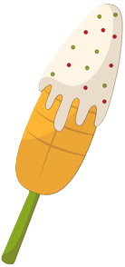

En esta pagina podras encontrar datos sobre el mes de septiembre en mexico como las fechas importantes, personajes ilustres y datos curiosos y leyendas
Septiembre es conocido en México como el «Mes Patrio» porque en este periodo se conmemoran los eventos históricos más importantes de la Independencia de México y la soberanía nacional.